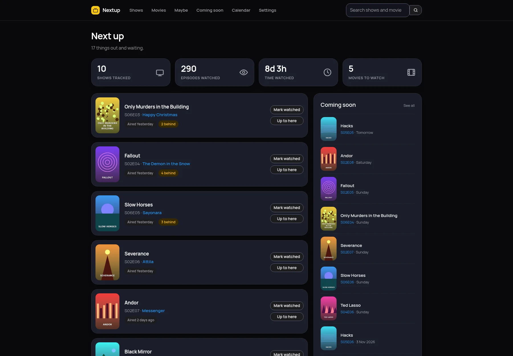
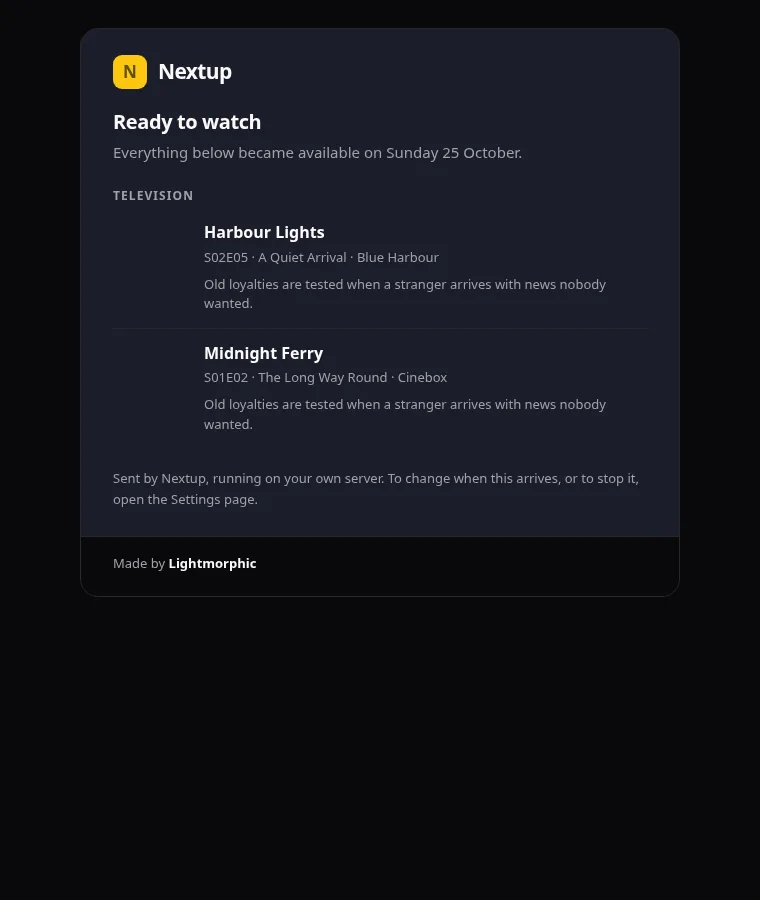
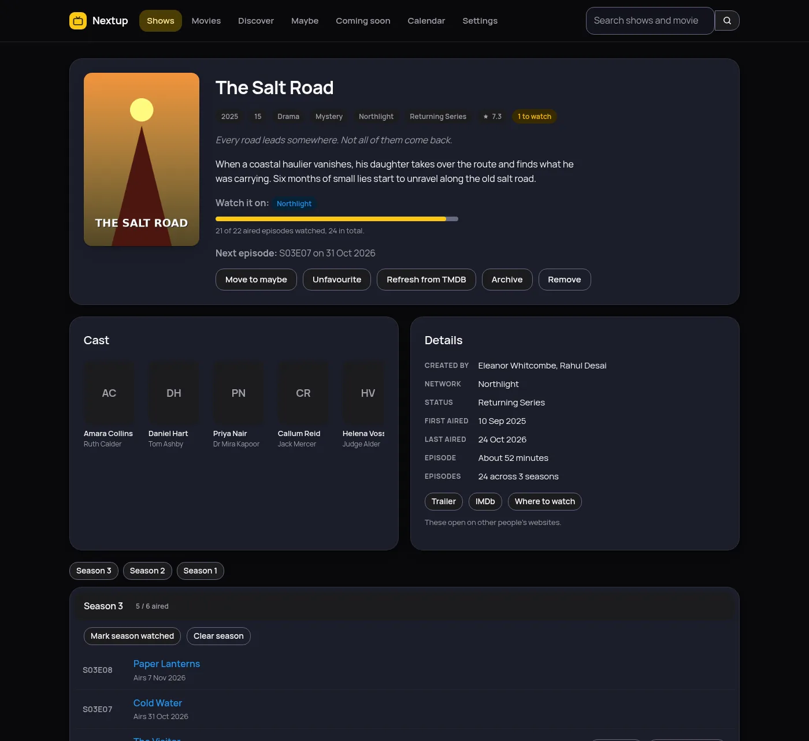
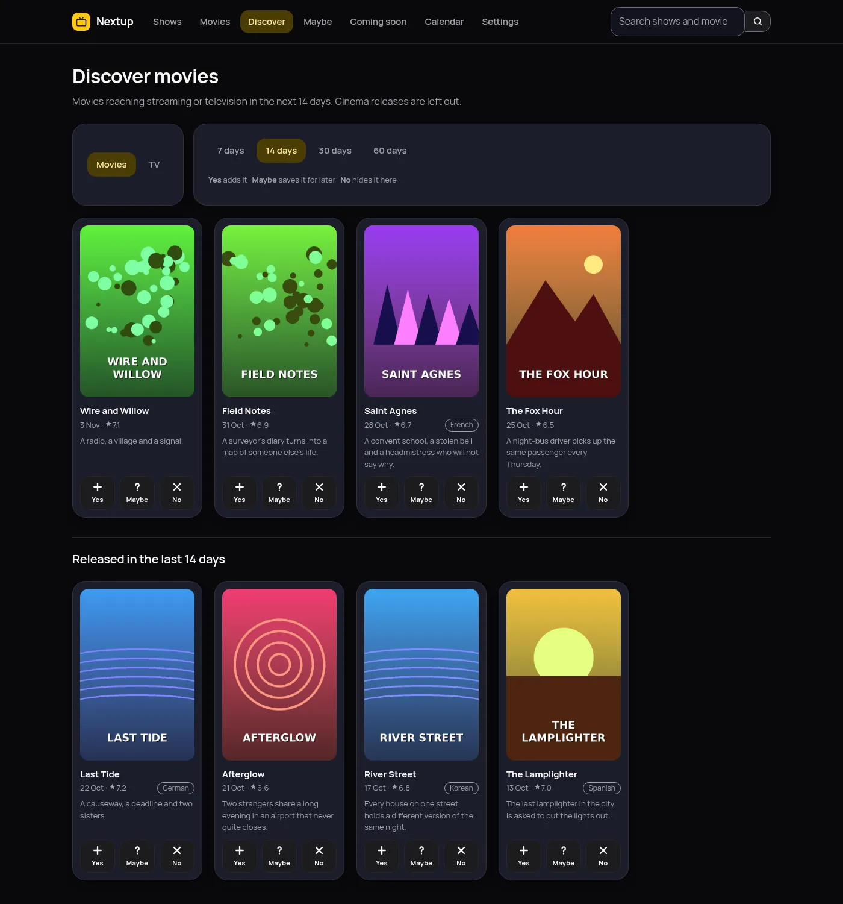
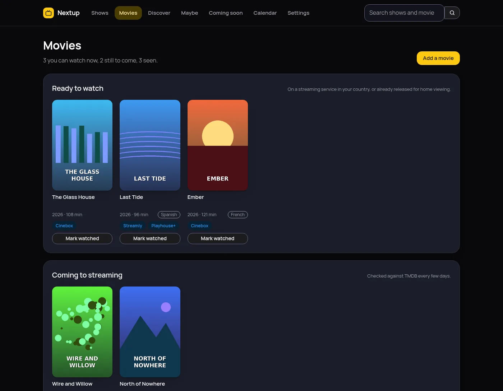
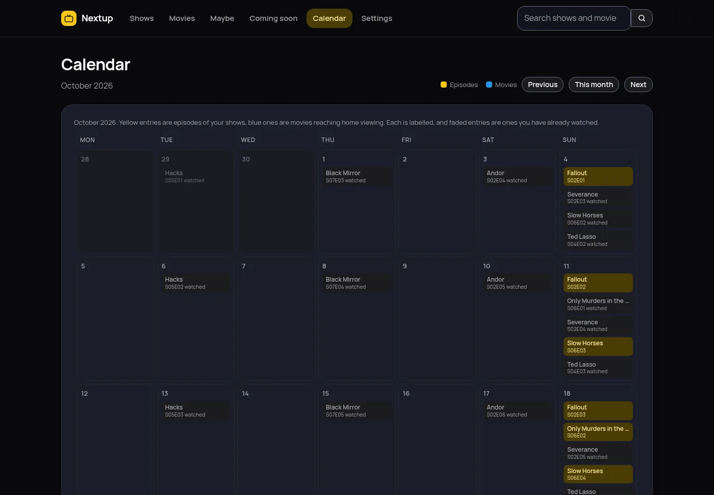
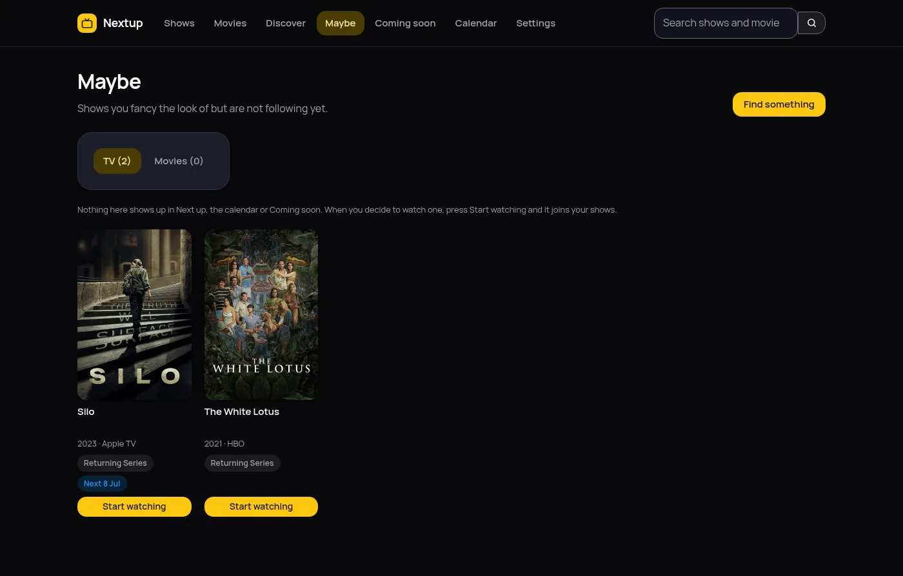

Which episode were you on?
Slow Horses, series 5, episode 2. Nextup remembers, for every show you watch.
Nextup remembers, for every show you watch, wherever you watched it. It works out what is waiting, tells you when the next one airs, and lets you know when a movie you wanted finally turns up on something you already pay for.
Free under the GPL. No account, no tracking, nothing to pay.

One email, every morning
A short message listing what became watchable overnight. The cover of each show and movie, a couple of sentences about it, which channel or service it is on, and a link straight to it. If nothing became available, nothing is sent.
A programme that goes out at eleven at night is not really available until the next day, so you tell Nextup how long to wait and it holds things back accordingly. Set the time to the minute. The covers travel inside the message, so it reads properly even with no signal.


Catching up without forty clicks
Pick the last episode you remember watching and press Up to here. Everything before it is marked watched in one go. That is how you get a show you started three years ago back under control.
Every episode has its own page too, with the still, the synopsis, the air date, the guest cast and the director. Episodes that have not aired cannot be marked by accident, and the progress bar counts only what has actually been broadcast, so a show is never quietly unfinished because of a Christmas special.
Archive a show you have put down and tick Unarchive when a new season arrives. It comes back by itself the day a new season appears, so you never miss a return. One Order setting sets newest or oldest first across your lists, and settings save as you change them, without the page reloading.
Yes, no, or maybe
Discover shows you what is arriving and asks one question about each of it. A plus puts it on your list. A question mark parks it on the maybe list. A cross sends it away and it does not come back.
The movie list asks for home releases rather than cinema ones, so it answers the question someone who does not go to the cinema is actually asking. A cross deletes nothing: the title still turns up in a search, and one button brings back everything you dismissed.
Discover shows only what is new: the days you choose, then a second group for what came out in the last 14 days. Each title carries its original language, and the Languages setting decides which ones you see. It starts on every language.


Movies, and when you can actually watch them
A cinema date is no use if you wait for things to reach a service you already have. Nextup reads the digital, physical and television release dates a movie has been given, picks the one for your country, and shows you that instead.
It also names which services in your country carry a movie right now. Subscription, free and ad-supported ones are listed. Rental and purchase are left out, because the question is what you can put on tonight without paying for it twice.
The month at a glance
Every tracked show on the day it airs, in yellow, with movies reaching home viewing in blue. Each is labelled, so the two are told apart without relying on colour, and anything you have watched fades back.

Not everything is a commitment
There is a difference between the shows you follow and the ones you have half an eye on. The maybe list keeps the second sort out of your dashboard, out of the calendar and out of the email, until you decide.

Nothing leaves your server
Most trackers want an account. This one has nowhere to send anything, so it is worth being exact about what it does and does not do.
- Artwork is fetched once and then served by Nextup itself. Covers are cached in your data directory, so no page in the app ever points your browser at a third-party host, and the email carries its pictures inside the message.
- The only outbound calls are to TMDB and your own mail server, both made by your server: TMDB to look up the shows and movies you asked for and when a movie reaches streaming, and your mail server only if you turn on the morning email.
- No analytics, no telemetry, no crash reporting and no third-party scripts, in the app or on this page. The only script here that is not part of the page is the Lightmorphic apps menu, which is ours and reports nothing.
- No account with us, because there is no us. Nextup has no server of its own to phone.
- One cookie, and it is yours. It keeps you signed in. It never leaves your server and it tracks nothing.
- One directory to back up. The database, the encryption key and the cached artwork all sit in the folder you mounted.
- One button to take it all with you. Everything you added, everything you watched and how you like it set up comes out as a single file. Put that on another machine and you carry on where you left off.
Running in about five minutes
You need Docker and a free TMDB account.
-
Make the data directory
Nextup runs as a normal user inside the container, user ID 1000, so the folder on the host has to belong to that same ID or the app cannot write to it.
sudo mkdir -p /opt/nextup sudo chown -R 1000:1000 /opt/nextup -
Start it
Save this as
docker-compose.ymland bring it up. It listens on port 4090 unless you change the left-hand number. The image isghcr.io/gh-lm/nextup, and the link to it is in the footer.services: nextup: image: ghcr.io/gh-lm/nextup:latest container_name: nextup restart: unless-stopped ports: - "127.0.0.1:4090:8080" security_opt: - no-new-privileges:true cap_drop: - ALL read_only: true mem_limit: 512m pids_limit: 128 tmpfs: - /tmp volumes: - /opt/nextup:/data - /etc/localtime:/etc/localtime:rodocker compose up -d -
Sign in and change the password
Open it in a browser and sign in with
adminandnextup. Nothing else opens until you choose your own password, which is the idea. -
Add your TMDB key
Make a free account, then go straight to themoviedb.org/settings/api and copy the API Key for v3 auth. Paste it into the Settings page in Nextup. It is checked against TMDB before it is saved, and encrypted once it is.
-
Add a show and mark your place
Search a title, press Add, then use Up to here on the last episode you watched. From then on the front page is a list of what is waiting, and the morning email starts arriving once you fill in your mail server.
What it deliberately does not do
Worth knowing before you spend those five minutes.
- It does not play anything. No streams, no downloads, no links to either. It is a record of what you watched, wherever you watched it.
- One person, one list. There is a single account. A household sharing it shares one watch history.
- There is no import yet. Coming from another tracker means re-entering your history. The season and Up to here buttons make that quicker than it sounds.
- No push notifications. One email in the morning, or nothing. It will not buzz your phone when an episode lands.
- It is not hosted for you. There is no signup page and no service to join. You run it yourself or you do not run it.
Questions people ask
- Does Nextup play or download anything?
- No. Nextup is a notebook, not a player. It records what you have watched and tells you what is next. It holds no video, links to no streams and downloads nothing except artwork from TMDB.
- Do I need a TMDB API key?
- Yes, and it is free. Make an account, then go straight to themoviedb.org/settings/api and copy the API Key for v3 auth. You paste it into the Settings page inside Nextup, where it is stored encrypted.
- How does it know when a movie reaches streaming?
- TMDB records several release dates for a movie, including the digital, physical and television ones. Nextup reads those and uses the date for the country chosen in its settings, which starts as the country of your time zone. It also lists which subscription, free and ad-supported services in that country carry the movie, using the JustWatch data TMDB publishes. Rental and purchase are left out.
- Can I keep a list of shows I might watch one day?
- Yes, that is the maybe list. Anything on it keeps its cover and its next air date but stays out of your dashboard, the calendar and the email, so it never makes you look behind on something you never started.
- Can more than one person use it?
- No. Nextup has one account and one watch history. Two people sharing it would share a single list. If you want separate lists, run a second copy with its own data directory.
- What does it cost?
- Nothing. It is released under the GPL version 3, so you can run it, read it and change it. There is no paid tier and no hosted version to buy.
- Where is my data kept?
- In one directory on your own server. A single SQLite database holds your shows and watch history, alongside the encryption key and the cached artwork. Backing up that directory backs up everything.
- How do I update it?
- Run
docker compose pull, thendocker compose downanddocker compose up -d. A plainup -dwill not fetch a newer image on its own. - What is it built with?
- Python and Flask, with SQLite for storage and plain CSS for the interface. There is no JavaScript framework and no build step. The whole thing is small enough to read in an evening.